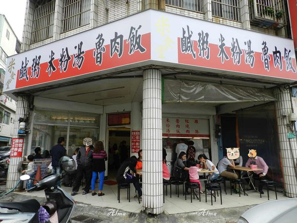
最近和姊妹淘在聊米粉湯, 她推薦了公司永安路上的【米食堂】
, 她說米粉湯鹹粥都很好吃喔, 於是假日我們就一家特地到永安路上嘗鮮,
看到三角窗的這家店面我很常經過耶,
但是卻沒有現在這家店都是好料,
附近不算好停車停車格很少,
只能先停在店家門口留個電話,
對面的餐廳花店停車格不知道不可以借停?
我們是俗辣還是敢看不敢停。
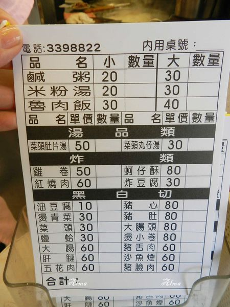
這裡的點餐方式~ 先拿號碼牌-點菜-等叫號進去坐,
生意太好啦! 我們等了十多分鐘才有位置,
進去後又等了十五分鐘才有東西吃
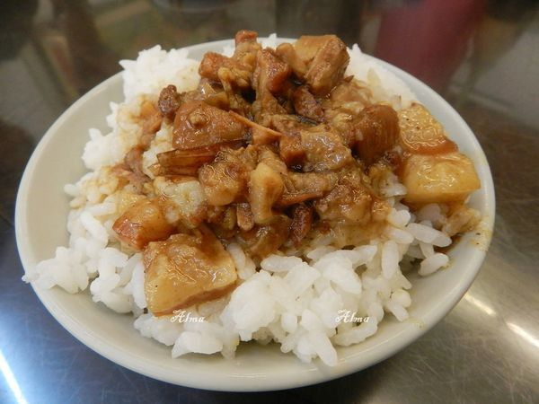
小碗滷肉飯30元, 小朋友吃一碗剛剛好,
米飯有點軟, 上面的肉燥幾乎都是肥滋滋的肥肉,
搭上油蔥酥一起滷, 我吃了一口這滷汁味道很不錯,
油蔥酥香氣也很足。
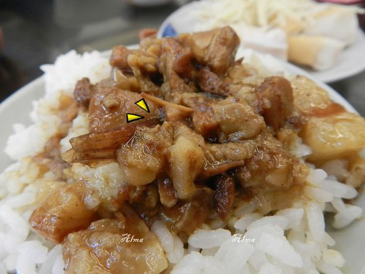
大塊的肥肉丁我看得很怕, 我家郭小弟卻非常愛,
一直問還有沒有這個醬和皮?
(郭小弟已經指名說以後還要來)
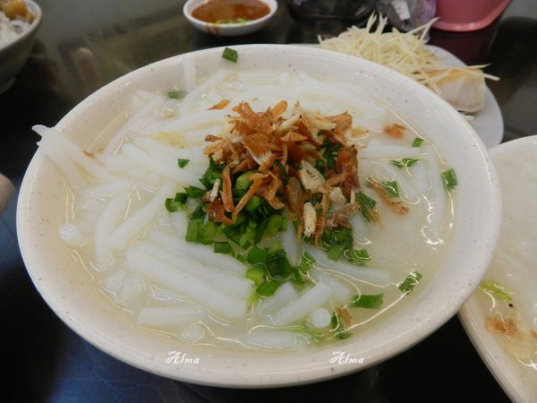
小碗米粉湯20元不夠吃就點大的30元,
米粉湯上的韭菜和油蔥酥給的量適中,
攪一攪撒點胡椒粉味道升級。
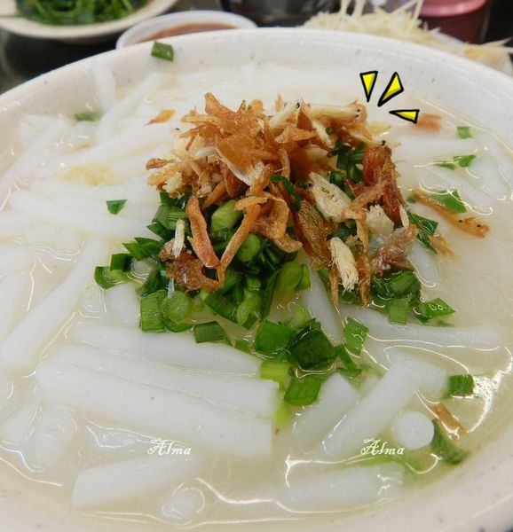
米粉湯濃郁適中, 除了大骨香還帶有蔬菜甜,
粗短米粉軟中帶彈牙, 粗短米粉沾上大骨湯,
我和郭先生都覺得好吃!!
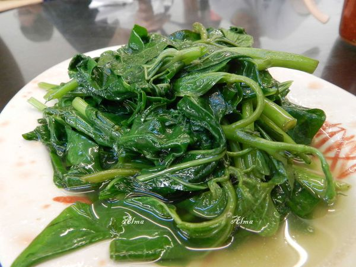
不管吃蝦米, 我家郭先生都堅持要來盤燙青菜,
我是肉食性主義者, 他點菜我點肉, 這燙地瓜葉還不錯,
沒有多餘的肉燥比較沒有那麼油膩, 帶有鹹味好吃。
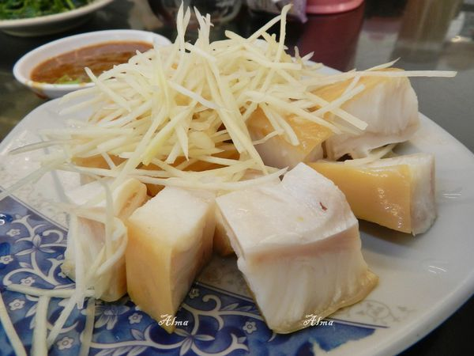
這盤鯊魚煙60元, 比一般小菜貴十元, 每塊鯊魚煙都是骰子狀,
富含膠質的外皮很彈牙, 肉很軟喔!
吃得出來有新鮮, 可能切比較大塊所以煙燻味道不夠香。
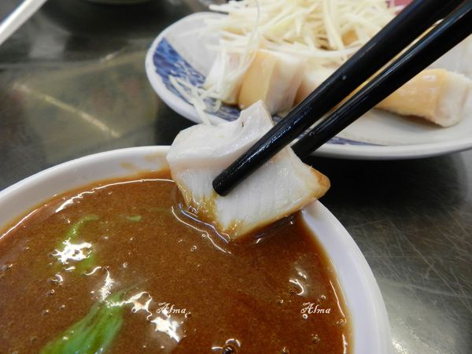
鯊魚煙在這就是要沾他們特有的味增米豆醬加芥末,
雖然味道很不錯, 但是煙燻味道更弱了....
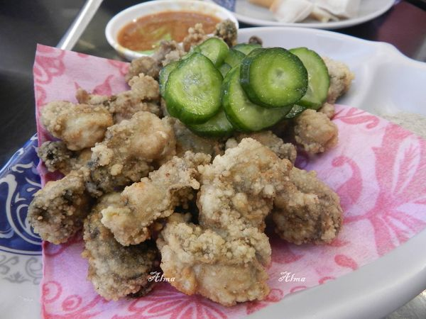
紅燒肉和炸蚵仔兩種都想吃, 幾乎每桌上都有點紅燒肉,
但是米食堂炸蚵仔80元比肉炒店少20元,
加上很少麵攤很少有賣炸蚵仔, 我怎麼能不點呢? 哈哈
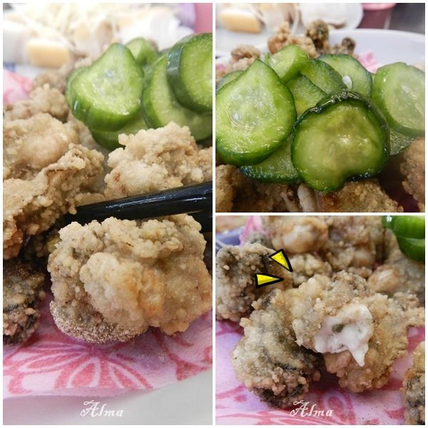
先來口小黃瓜片, 這小黃瓜是甜的耶! 我本來以為搭配炸蚵仔,
小黃瓜會沒醃製過的, 小黃瓜甜又脆好吃喔!
以80元的蚵仔量來說算挺ok了, 比我在百元吃的熱炒店要多,
外層粉漿適中不會太厚, 蚵仔鮮嫩多汁有新鮮, 趁熱吃外酥內軟沾點胡椒鹽好吃,
過十分鐘外層地瓜粉已經軟了, 就沒有那麼好吃喔。
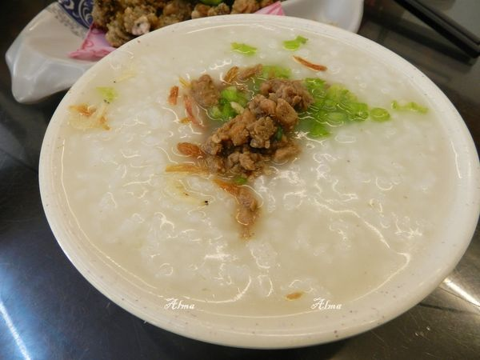
鹹粥一碗20元,雖然便宜但是挺小碗的, 濃稠的鹹粥底上面還有芹菜和肉末與蝦米。
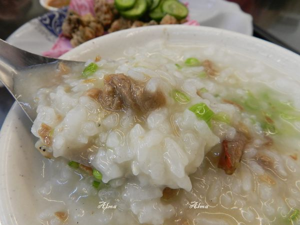
鹹粥拌一拌趁熱吃, 這米飯的軟度是我第一次吃到的,
不像萬華的肉粥帶有米飯顆粒, 又不像廣東粥軟爛,
每粒粥米都有高湯鹹味, 不用加胡椒粉就非常好吃,
肉末軟嫩夠味, 下次來要點大碗來吃。
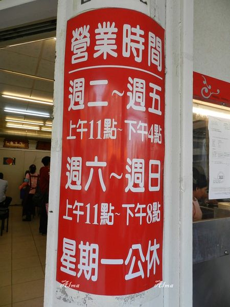
米食堂
電話：03-339-8822
地址：桃園市永安路265號
公休日:每週一
營業時間:每周二~每周五11:00-16:00
週六~週日11:00-20:00
引用文章:艾瑪▪ 享受吃喝玩樂札記